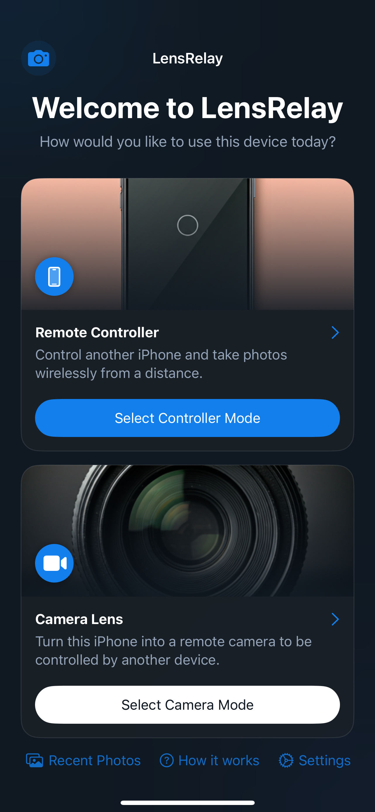
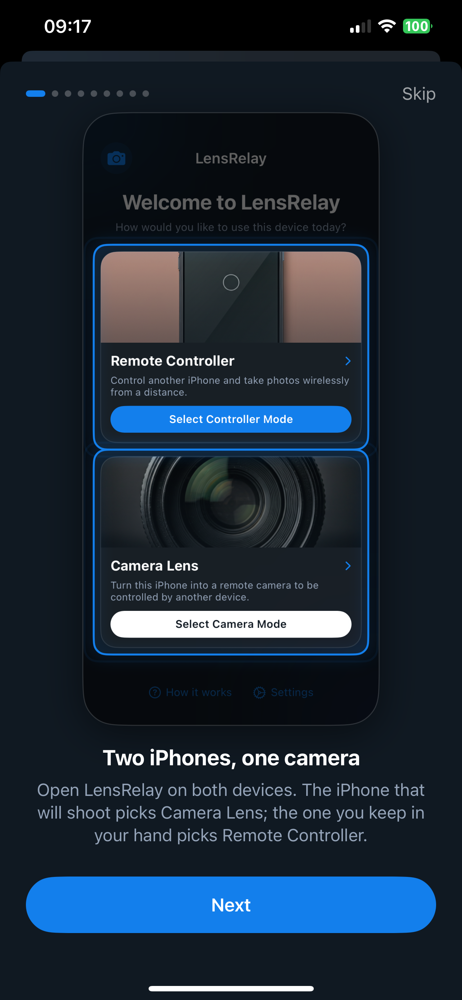
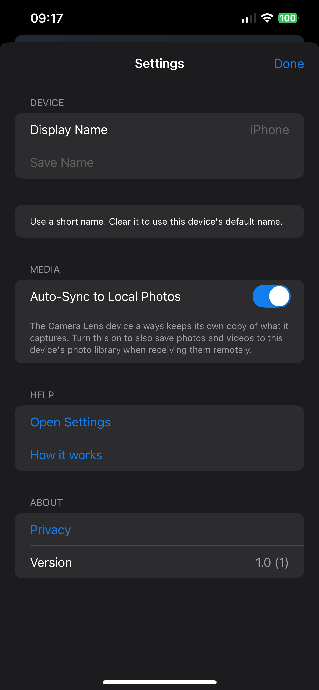
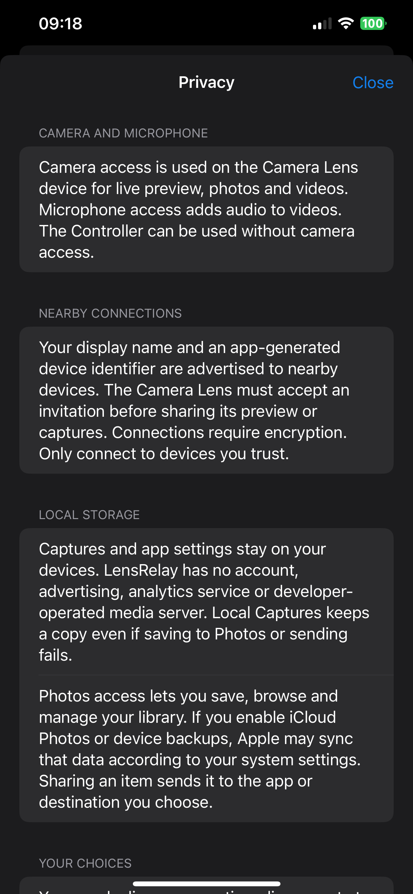

Place one device where you want to shoot. Use another nearby device to frame your shot, take photos and start or stop video recording.
• No account required • Nearby connections with consent and encryption • Connect → Frame → Capture → Save

Actual LensRelay interface captured on iPhone 12 Pro Max.
Choose Camera Lens on the shooting device and Remote Controller on the device in your hand. The camera accepts your invitation before sharing its preview or captures.
View the camera’s live preview on your controller. Keep the camera in the foreground; if preview stalls, try Auto, Stream or JPEG, or reconnect.
Take photos and start or stop video from the controller. Switch cameras and adjust zoom; available controls depend on the camera hardware and capture mode.
The camera keeps its captures, and the controller retains received media locally. View photos, play videos, save to Photos, share or delete a local copy.
Auto-Sync controls the additional Photos copy of received media. Turn it off to keep local captures and save manually when you choose.
Read privacy information in Settings, even offline. LensRelay has no account, ads, analytics service or developer-operated media server.
Install LensRelay on two nearby compatible devices running iOS/iPadOS 18 or later. Enable Wi-Fi and Bluetooth, allow Local Network and keep both apps in the foreground.
Choose Camera Lens on one device and Remote Controller on the other. Tap Connect on the controller, then accept on the camera. Allow camera and microphone access on the shooting device.
Use the controller to frame, photograph or record. Open Local Captures to review and save your media. The camera must stay in the foreground; backgrounding it ends recording.
LensRelay connects nearby devices. It does not provide internet-based remote camera access.
Role selection, in-app connection guide, saving preferences and privacy information. Screenshots switch with the selected language.



These screenshots show the actual app. The connection guide is an instructional page, not a live connected camera feed.
Your app settings and local captures stay on your devices. Nearby peers can see your display name and an app-generated device identifier. Only connect to devices you trust.
For questions or feedback, contact us by email. Include the app version, device model, OS version, steps and any error message. Avoid sending personal media or sensitive information.